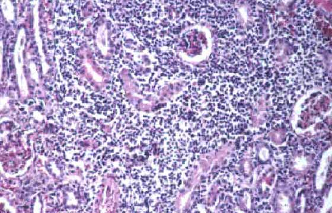

Brucella Abortus
About
Brucella are very small, gram-negative coccobacilli that cause a zoonosis called brucellosis. Common names for this infection are Bang's disease in cattle, malta fever, and undulant fever. Brucellosis is transmitted to humans from animals and animal products that are infected. These bacteria enter the body through cuts and mucous membranes. They infect phagocytes and are carried to the lymph nodes. The phagocytes lyse and release the bacteria into circulation. The blood carries Brucella to organs such as the liver, spleen, bone marrow and kidneys where they cause lesions. Symptoms of brucellosis include fluctuating fever, chills, sweating, headache, muscle pain, and weight loss. One species of Brucella, calledB. abortus infects the placenta and fetus of gestating cows and causes the fetus to abort. When humans are infected by this organism they develop a severe fever, but do not abort.
Although brucellosis occurs worldwide, it is concentrated in Europe, Africa, India, Mexico, and South America. Some cases have been caused by consumption of raw milk and cheeses. However, the majority of cases occur in people who handle livestock, such as slaughter-house workers and veterinarians. There have been no cases reported of human to human transmission of brucellosis. When herds of cattle or wild bison and elk become infected, they sometimes have to be destroyed to prevent the spread of the disease to other herds. Other preventative measures include the quarantine and testing of imported animals and pasteurization of milk. Once a person becomes infected though, they are prescribed a combination of tetracycline and streptomycin for 3-6 weeks. Also, there is a vaccine available for animals but it is not effective in humans.

Species Affected
Cattles and pigs
Additional Information
Leptospira Canicola in H&E Solution
Bacteria in Animals
Diseases brought about by bacteria’s
in the animals body have been rampantly spreading.
Leptospira Canicola

Bacteria in Animals
Diseases brought about by bacteria’s
in the animals body have been rampantly spreading.
Back